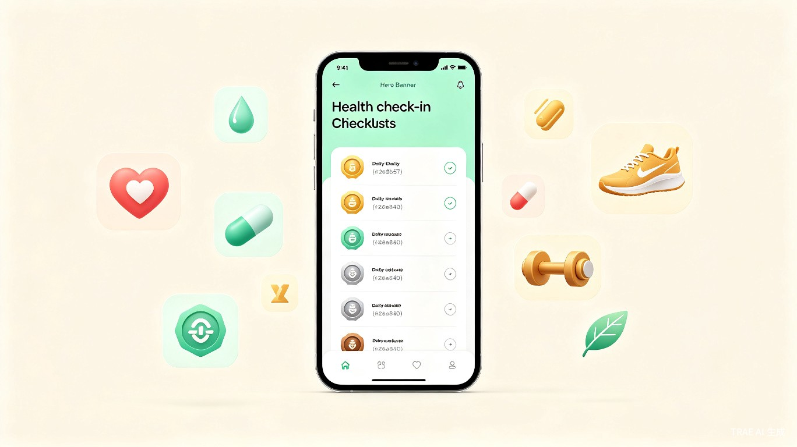

你的专属健康养成助手
生活娱乐赛道现代人普遍面临亚健康问题，高血压、糖尿病、肥胖、颈椎腰椎劳损等慢性健康困扰日益年轻化。很多人有心改善但缺乏持续动力和监督，自己定计划往往坚持不了几天就放弃。
目前市面上的工具要么太泛——什么都能打卡但缺乏针对性；要么太专业——像医疗 App，普通人用不起来。
需要一个既专业又轻量、有游戏化激励机制，能针对不同健康问题定制计划的日常健康管理工具。
身边很多人都有各种健康小毛病，医生建议的生活方式调整都知道，但就是做不到。比如家人有高血压、同事长期颈椎疼，大家买了各种设备、下了各种 App，最后都吃灰了。核心问题不是"不知道"，而是"坚持不下去"。所以我想做一个能针对不同健康问题定制计划、用游戏化徽章激励用户坚持的产品。
一个基于 AI 的微信小程序，用户选择健康计划后，每天微信提醒打卡，计划周期结束后按完成度获得徽章奖励。
高血压、糖尿病、肥胖人群，需要长期健康管理但缺乏日常监督
长期伏案工作，有颈椎腰椎问题、腰酸背痛的上班族
想要养成健康习惯但缺乏自律的普通用户
通过微信生态触达，零门槛使用，真正覆盖需要健康管理的人群
计划时间到期后，按完成度给予用户徽章奖励：
健康领域是巨大的蓝海市场。产品初期以免费工具形态积累用户，中期可接入健康电商（如血压计、颈椎按摩仪、健康食品等精准推荐）、健康保险导流、企业健康管理服务（B 端企业给员工购买健康计划）等变现路径，商业模式清晰且可持续。